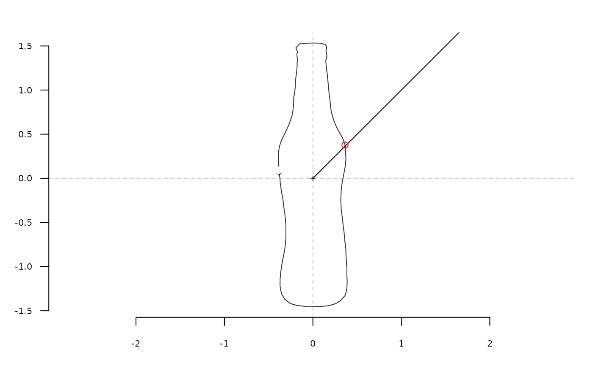

Nearest intersection between a shape and a segment
Source:R/coo-utilities.R
coo_intersect_segment.RdTake a shape, and an intersecting segment, which point is the nearest of where the segment intersects with the shape? Most of the time, centering before makes more sense.
Arguments
- coo
matrixof(x; y)coordinates or any Coo object.- seg
a 2x2
matrixdefining the starting and ending points; or a list or a numeric of length 4.- center
logicalwhether to center the shape (TRUE by default)
See also
Other coo_ intersect:
coo_intersect_angle()
Examples
coo <- bot[1] %>% coo_center %>% coo_scale
seg <- c(0, 0, 2, 2) # passed as a numeric of length(4)
coo_plot(coo)
segments(seg[1], seg[2], seg[3], seg[4])
coo %>% coo_intersect_segment(seg) %T>% print %>%
# prints on the console and draw it
coo[., , drop=FALSE] %>% points(col="red")

#> [1] 79
# on Coo
bot %>%
slice(1:3) %>% # for the sake of speed
coo_center %>%
coo_intersect_segment(matrix(c(0, 0, 1000, 1000), ncol=2, byrow=TRUE))
#> $brahma
#> [1] 79
#>
#> $caney
#> [1] 96
#>
#> $chimay
#> [1] 110
#>